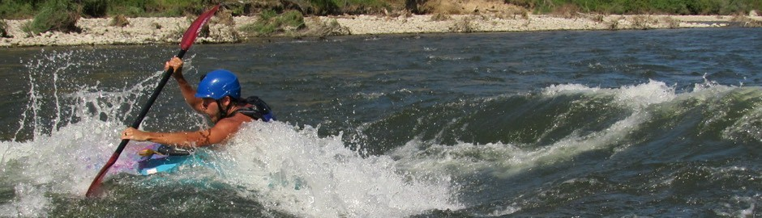
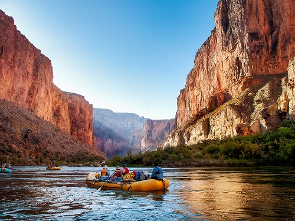
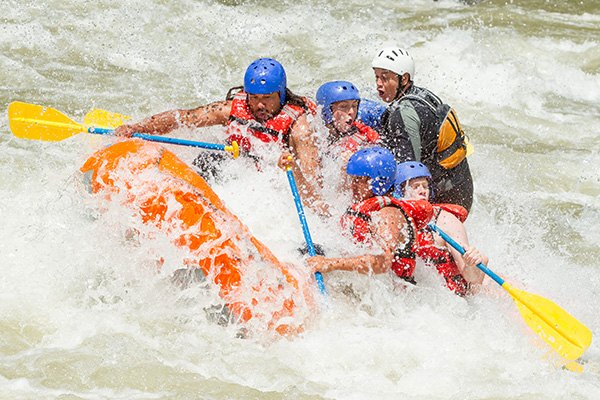

Go on an adventure with us!
We are a family-owned company based along the Snake River in Cody, Wymoing. We provide rafting adventures all along the western United States. Whether you're ready for rapids or relaxation, we have you covered. We can accomodate groups of all sizes and ages. Let us create the dream adventure for your, your family and your friends.


Enjoy a peaceful 3 day float down the Green River in Colorado where we bring all the food and camping gear.
Spend an afternoon braving the rapids in Wyoming
About Our Trips
We provide rafting trips all over the Western United States that your entire family will enjoy.
Come and see what we have to offer!
View our available adventures